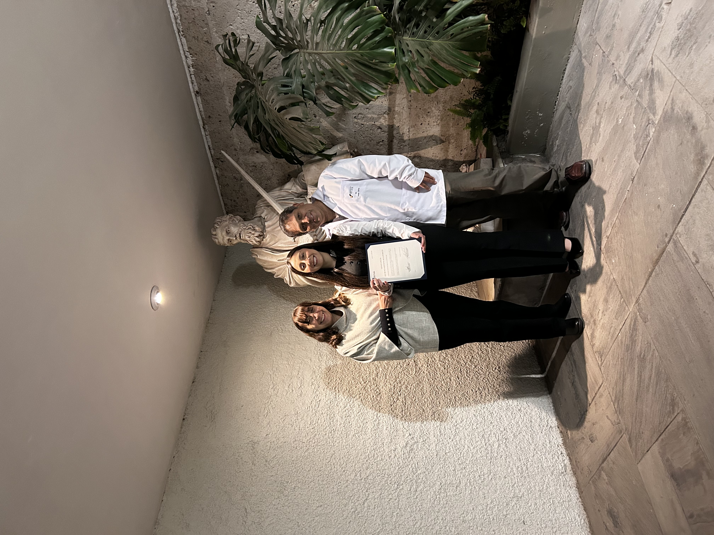
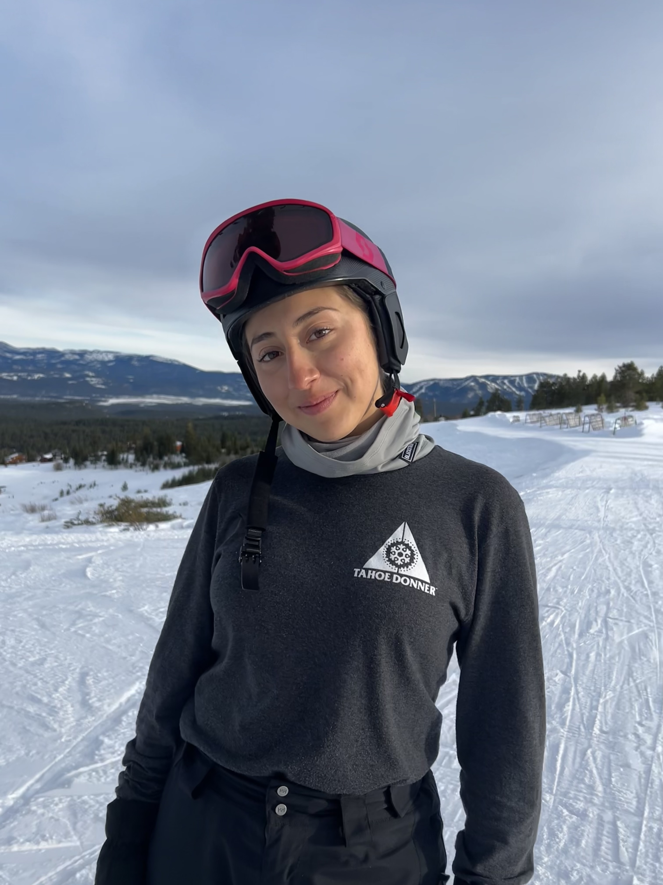

Mi universidad
Toca la imagen para acceder al sitio institucional de la universidad.
Administración de Negocios · Universidad Católica San Pablo · Arequipa, Perú
Orientada a las finanzas y la banca · Trilingüe: español, inglés y francés
ExplorarEstudiante de Administración de Negocios en la Universidad Católica San Pablo, con orientación hacia las finanzas y el sector bancario. Obtuve el primer puesto de la carrera en el semestre 2025-II y he complementado mi formación académica con experiencias internacionales: intercambios en Londres y Francia, y una temporada profesional como instructora de esquí a través del programa Work and Travel.
Mi perfil integra liderazgo, comunicación efectiva y capacidad de negociación, junto con una sólida gestión de conflictos, organización y toma de decisiones bajo presión. Me desenvuelvo con solvencia en español (nativo), inglés (C1) y francés (B2), con certificaciones Cambridge y DELF. Mi objetivo es desarrollarme profesionalmente en instituciones financieras y bancarias de referencia.
Conoce el programa de Administración de Negocios de la Universidad Católica San Pablo.
Conoce mi carreraConsulta la lista completa de cursos de la carrera y de sus docentes, con acceso a sus perfiles profesionales.
Cursos de la carrera y docentesCompetencias blandas
LiderazgoComunicación efectivaOratoriaNegociaciónGestión de conflictosTrabajo en equipoOrganización y planificaciónResponsabilidadToma de decisiones bajo presiónPensamiento críticoPensamiento analíticoResolución de problemasAdaptabilidadResilienciaEmpatíaCreatividadGestión del tiempoComunicación interculturalCompetencias técnicas
Microsoft ExcelMicrosoft WordMicrosoft PowerPointCanvaEdición de videoGoogle DocsGoogle SheetsGoogle Slides
Ceremonia de reconocimiento
Mi interés se centra en las finanzas y la banca. A futuro, aspiro a desarrollar mi carrera en instituciones como:
En el plano personal, me propongo obtener la certificación profesional como instructora de esquí.
Estoy abierta a oportunidades de colaboración y desarrollo profesional. Puedes contactarme a través de:
nataliaortizdc@gmail.com · natalia.ortiz@ucsp.edu.pe